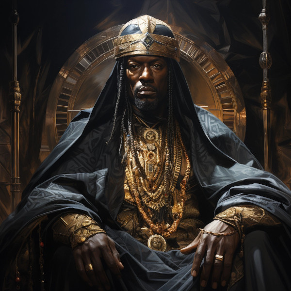

Figure 1: King Tasfaye the Wise
And though he is often portrayed as a Durama (and given his name, most likely was) he ruled over all adama. So he is revered by all adama races. He had to be rediscovered after the second era. He is said to have authored more than a thousand songs and two thousand proverbs. Most of which has been lost to time. Some of his works are still accessible. Most notable are his commentaries on the Rahnami.
King Rahnami was the most wise and righteous ruler in recorded history. He reigned in the late First Era. Taking the throne at a young, Tasfaye ruled for nearly sixty years (1843FE - 1900FE).